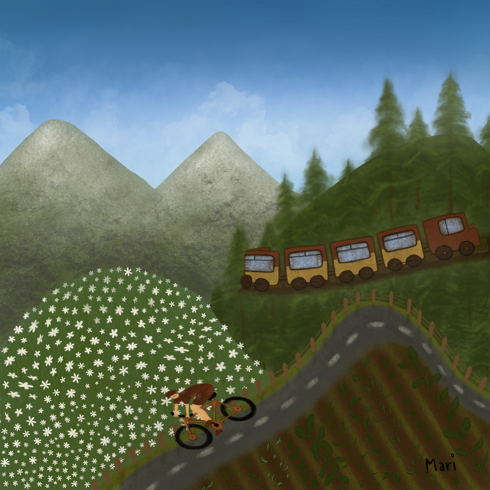
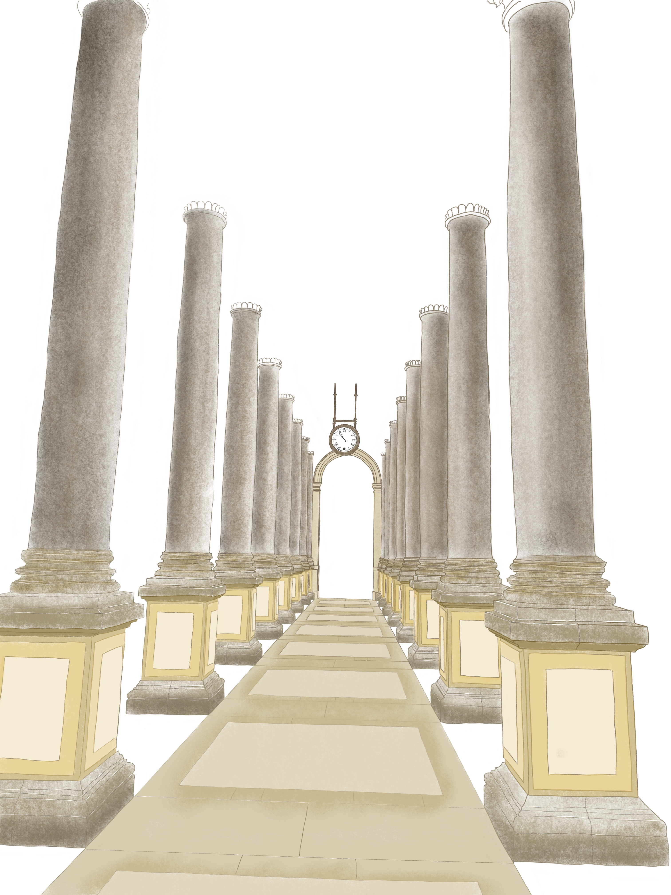

- This illustration is special for me, I hope you experience the same adventure as drawing it was.

- Where do you look for inspiration? I grew up in a small village and I saw a lot of beautiful nature all around me. Try to find your inspiration around you. Go back deep into your mind and try to become a child again.

- If there is one thing I love, it is grain growing in the fields.

- This work is not finished yet, but I like how it looks now. Watching the construction process is my favourite thing. How can someone build something so amazing?
